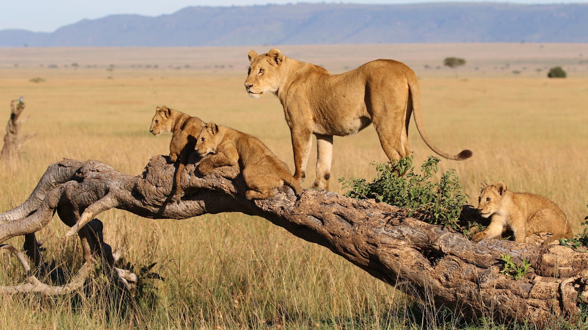
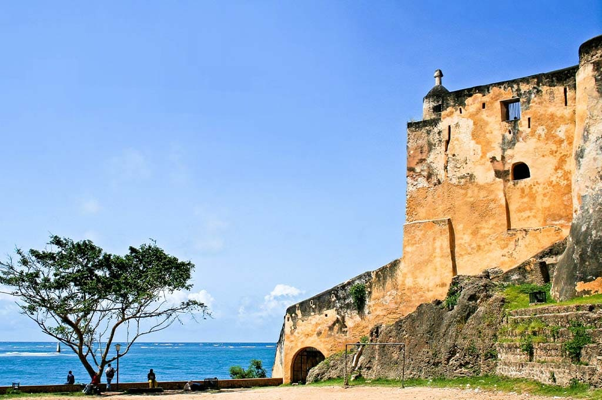
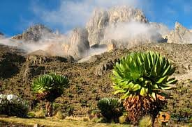

Kenya - The Heart of African Safari

Introduction
Kenya is a diverse and vibrant country located in East Africa, renowned for its breathtaking landscapes, abundant wildlife, and rich cultural heritage. It is considered one of the world’s top safari destinations.
From the sweeping savannahs of the Maasai Mara to the white sandy beaches of the Indian Ocean coast, Kenya offers unforgettable experiences for nature lovers, adventure seekers, and cultural explorers alike.
Quick Facts
- Capital: Nairobi
- Population: Approximately 55 million
- Language: English and Swahili
- Currency: Kenyan Shilling (KES)
- Best Time to Visit: June–October and January–February
Explore Major Destinations
Jump to a specific destination
\r\n
Nairobi
Region: Central Kenya
Nairobi is the capital and largest city of Kenya, often referred to as the “Green City in the Sun.” It is unique for being the only major city in the world with a national park located just outside its center.
The city serves as Kenya’s economic and cultural hub, offering modern shopping centers, museums, vibrant nightlife, and access to wildlife experiences within minutes of the city.
Must-See Attractions
- Nairobi National Park - Wildlife reserve near the city
- David Sheldrick Wildlife Trust - Elephant orphanage
- Giraffe Centre - Conservation center for Rothschild giraffes
- Karura Forest - Nature trails and waterfalls
- National Museum of Kenya - History and culture exhibits
Back to top
Maasai Mara

Region: Southwestern Kenya
The Maasai Mara National Reserve is Kenya’s most famous wildlife destination, known for its vast open plains and incredible biodiversity.
It is especially famous for the Great Migration, where millions of wildebeest and zebras cross the Mara River in search of fresh grazing lands, creating one of nature’s most spectacular events.
Must-See Attractions
- Great Migration - Annual wildlife movement
- Big Five Safaris - Lion, elephant, buffalo, leopard, rhino
- Hot Air Balloon Safaris - Sunrise views over the savannah
- Maasai Villages - Cultural experiences
- Mara River - Dramatic river crossings
Back to top
Mombasa

Region: Coastal Kenya
Mombasa is Kenya’s main coastal city and a major port along the Indian Ocean. It is known for its beautiful beaches, historic architecture, and Swahili culture.
The city blends African, Arab, and European influences, offering visitors a mix of beach relaxation, cultural exploration, and historical landmarks.
Must-See Attractions
- Fort Jesus - UNESCO World Heritage Site
- Diani Beach - White sand beaches and clear waters
- Old Town - Historic streets and Swahili architecture
- Haller Park - Nature reserve and wildlife sanctuary
- Nyali Beach - Popular coastal destination
Back to top
Mount Kenya

Region: Central Highlands
Mount Kenya is the second-highest mountain in Africa and a UNESCO World Heritage Site. It is an extinct volcano with rugged peaks, glaciers, and diverse ecosystems.
The mountain attracts hikers, climbers, and nature enthusiasts, offering scenic trails, alpine lakes, and unique wildlife such as elephants and rare bird species.
Must-See Attractions
- Point Lenana - Popular trekking summit
- Mount Kenya National Park - Protected natural area
- Sirimon and Chogoria Routes - Scenic hiking trails
- Alpine Lakes - Crystal-clear mountain lakes
- Unique Flora and Fauna - Afro-alpine vegetation
Back to top
Travel Tips for Kenya
These tips will help ensure a safe and enjoyable visit to Kenya.
- Wildlife Safaris: Book guided tours for safety and conservation support.
- Health: Carry insect repellent and consider recommended vaccinations.
- Currency: Cash is useful in rural areas; ATMs are common in cities.
- Clothing: Wear light clothing and neutral colors on safaris.
- Culture: Respect local customs and traditions.
← Back to Africa Home